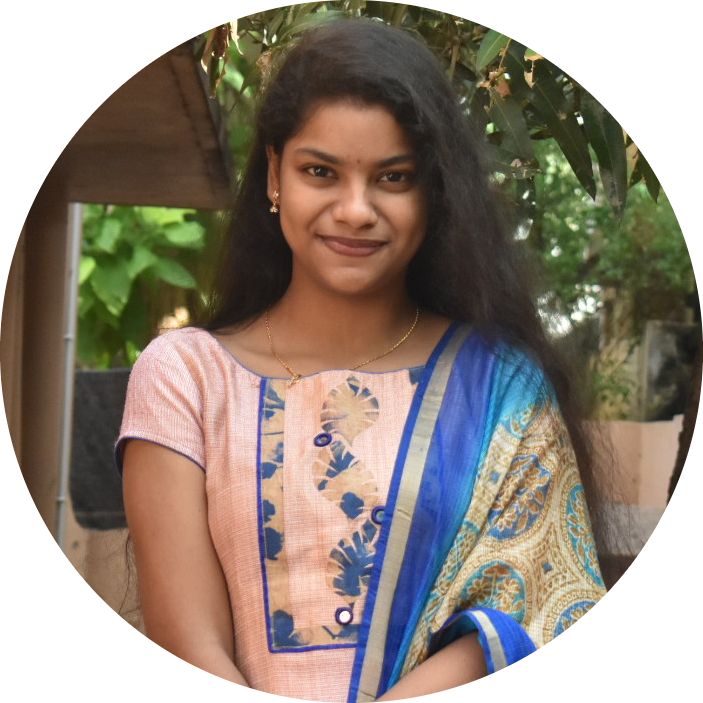

|  |
Padmanica Damodaran
Student
Motivated individual with strong work ethic and working independently. Strong organizational and team collaboration skills with experience in improving processes. Skilled in working under pressure and adapting to new situations and challenges to best enhance the organizational brand. |
padmanica.d@gmail.com
+91 9949338399
Visakhapatnam, Andhra Pradesh
LinkedIn
|
Education
Bachelor of Technology - Computer Science
Gandhi Institute of Technology And Management | Visakhapatnam | 2019 - 2023
CGPA: 8.65
Internship
Student Professional - Community Manager | CAARYA
Remote | August 2021 - October 2021
- Setting and implementing social media and communication campaigns to align with marketing strategies.
- Defining and developing a community management strategy.
- Organizing various community building initiatives to cultivate and grow participation in community forums.
- Providing engaging text, image and video content for social media accounts.
- Responding to comments and customer queries in a timely manner.
Project Manager | CAARYA
Remote | October 2021 - January 2022
- Responsible for a project and accountable for its success or failure.
- Keeping the company updated with latest project management tools and strategies.
- Assess, control and deliver quality projects as per the deadlines.
- Track the progress of the project and address potential issues.
- Coordinate quality controls to ensure deliverables meet requirements.
- Responsible for closure of projects and delays if any.
Machine Learning Engineer | Phoenix Global
Remote | May 2022 - Present
- Create machine learning projects
Skills
| HTML |
⭐⭐⭐⭐⭐ |
| Interpersonal Communication |
⭐⭐⭐⭐⭐ |
| Emotional Intelligence |
⭐⭐⭐⭐⭐ |
| Leadership |
⭐⭐⭐⭐⭐ |
|
| Managerial Skills |
⭐⭐⭐⭐⭐ |
| CSS |
⭐⭐⭐⭐ |
| C |
⭐⭐⭐⭐ |
| Python |
⭐⭐⭐⭐ |
|
Extra-Curricular
Part of multiple clubs in the university. Member of The Anchoring Club and the biggest cultural club Kalakrithi’s social
media manager, specifically Instagram. Member of the Google Developer Student Club, a technical club under the event
management team at GITAM. On and off-campus, performed at a number of college fests. An active member in all the
clubs